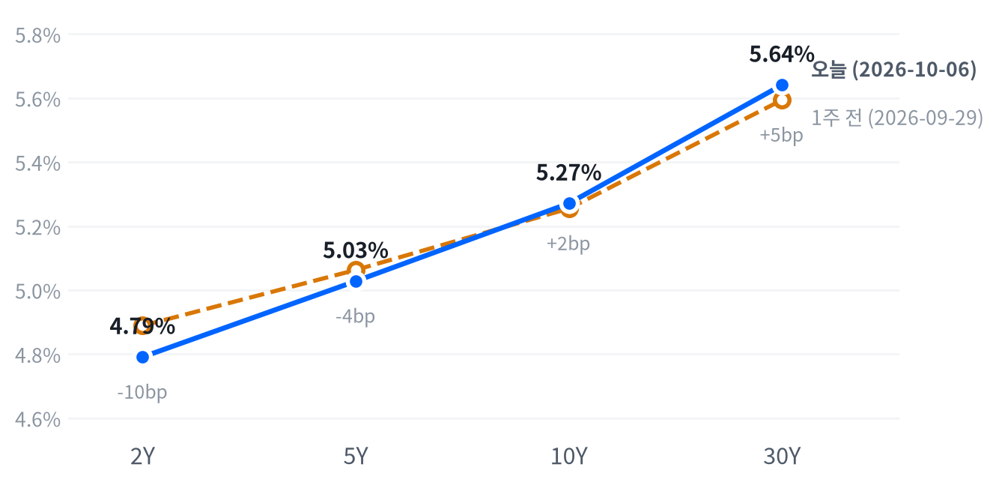

화요일 뉴욕 증시는 사상 최고 종가로 끝났지만 하루를 가른 것은 AI 수요가 어디로 번지느냐였다. 구글의 원전 계약에 발전주가 뛰었고 마벨은 중기 매출 목표를 올린 반면, 저장장치는 도시바 증설 재료에 다시 밀렸다.
전력과 맞춤형 칩 후보 테마의 가격 근거는 강해졌다고 본다. 금리 민감 테마는 10월 7~8일 10년물·30년물 입찰과 FOMC 의사록을 본 뒤 판단한다.
S&P500이 처음으로 7,800선 위에서 마감해 사상 최고 종가를 새로 썼다. 그래도 하루를 움직인 것은 지수보다 AI 수요가 어디로 번지느냐였다. 구글이 컨스텔레이션 에너지와 원전 출력 증강 계약을 맺자 원전 발전주가 뛰었고, 유틸리티 섹터가 2.98% 올라 섹터 1위가 됐다. 마벨은 인베스터데이에서 중기 매출 목표를 올렸고, 저장장치 업체는 도시바의 증설 계획에 다시 무너졌다.
같은 AI 수요가 테마마다 다른 가격 근거를 만든 날로 판단한다. 전력과 맞춤형 칩에서는 수요가 새 계약과 목표치로 확인됐다. 마벨이 내놓은 중기 매출 목표 200억 달러는 Investing.com 등이 인용한 애널리스트 컨센서스 182억 달러를 웃돌았다. 반면 HDD에서는 공급 쪽 재료가 수요 서사를 눌렀다. 지수의 힘은 정규장 안에서 약했다. 상승분 대부분이 개장 갭에서 나왔고 나스닥과 러셀2000은 저점권에서 끝났다. 국채금리가 전 만기에서 내린 날이라 유틸리티 급등의 일부는 금리에 민감한 배당주의 반등이었을 수도 있다. 섹터 상승 가운데 원전 종목의 몫을 떼어 낼 구성 자료가 없어 두 설명은 아직 갈리지 않는다. 금리 하락 자체는 직접 촉매가 확인되지 않아 전날 급등의 되돌림으로 본다.
전력·발전 후보 테마의 가격 근거는 강해졌다고 본다. 하루 10% 넘게 뛴 발전주를 3개월 시계의 근거로 쓰려면, 금리가 다시 오르는 날에도 이들이 유틸리티 평균보다 버티는지 먼저 확인해야 한다. 반도체·AI 하드웨어 후보는 맞춤형 칩 쪽 근거가 강해졌지만, 같은 테마 안에서 저장장치와 메모리가 내려 종목 묶음을 어떻게 짜느냐에 따라 결과가 갈린다. 배당·부동산·장기 성장주처럼 금리에 민감한 테마는 이번 주 장기물 입찰을 본 뒤 판단하는 편이 근거상 낫다. 오늘은 새 아이디어를 내지 않고 이 두 확인을 기다린다.
원전·전력주가 다음 금리 상승일에 유틸리티 평균보다 크게 밀리면 계약 재평가보다 금리 반등 설명이 맞다고 보고 전력 테마에 대한 판단을 거둔다. 10년물·30년물 입찰이 무난히 소화되고 5년물과 30년물의 금리차가 9월 29일 수준인 53.1bp 쪽으로 좁혀지면 장기물 프리미엄 판단을 거둔다. 확인 일정은 10월 7일 13:00 ET 10년물 입찰과 14:00 ET FOMC 의사록, 8일 30년물 입찰, 14일 9월 CPI다.
| 지수 | 종가 | 등락률 | 기준일 |
|---|---|---|---|
| 닛케이225 | 69,946.86 | +2.40% | 10월 5일 |
| 항셍 | 24,040.34 | +0.28% | 10월 5일 |
| 상해종합 | 3,842.20 | +0.31% | 9월 30일 |
| DAX | 25,254.21 | +0.09% | 10월 5일 |
| FTSE100 | 10,497.90 | +0.34% | 10월 5일 |
| 유로스톡스50 | 6,242.14 | +0.06% | 10월 5일 |
| VIX | 15.01 | -3.29% | 10월 6일 |
아시아·유럽 지수는 확보된 가장 최근 마감 기준이다. 상해종합은 9월 30일, 나머지는 10월 5일 월요일 마감이다.
아시아와 유럽이 모두 올라 미국의 상승과 같은 방향이었다. 10월 5일 마감에서 닛케이가 2.40% 뛰어 아시아를 이끌었고 항셍도 0.28% 올랐다. 상해종합은 9월 30일 마감이 최신이다. 유럽은 DAX·FTSE100·유로스톡스50이 모두 소폭 오르는 데 그쳐 방향만 같았다. VIX는 15.01로 3.29% 내렸고 지난 두 해 가운데 낮은 쪽 13% 안에 있다.
야간 선물은 오름세로 정규장을 맞았다. S&P 선물(ES)은 전날 16:30(ET) 7,828에서 저점을 찍은 뒤 이날 오전 08:00에 7,868로 고점을 만들었다. 같은 시각 WTI가 하루 저점까지 밀려 있었다. 나스닥100 선물(NQ)의 야간 폭은 0.73%였다. 현물은 S&P +0.41%, 나스닥 +0.57%, 러셀2000 +0.27%의 갭으로 출발했다. Yahoo Finance는 기술 대형주 강세와 유가·국채금리 하락이 S&P를 장중 최고치로 밀어 올렸다고 전했다.
S&P는 하루 범위의 중간쯤에서, 나스닥과 러셀2000은 저점권에서 끝났다. 세 지수 모두 오전에 고점을 찍고 오후 내내 밀렸다.
고점권·저점권 경계는 최근 2,253거래일의 일간 종가 위치 이력으로 다시 잰 기준이다.
AI 재료가 아침을 열었고 오후에는 동력이 빠졌다. TheStreet는 국채금리 하락과 대형 기술주 강세, 컨스텔레이션 에너지와 알파벳의 원전 계약 낙관론을 이날의 동인으로 꼽았다. 오전 고점 이후 S&P와 나스닥이 밀린 원인과 러셀2000 하락의 당일 재료는 확인되지 않았다. 장 마감 뒤 거래에서 눈에 띄는 움직임을 확인할 자료는 없다.
| 지수 | 종가 | 등락률 |
|---|---|---|
| S&P500 성장주 | 146.12 | +0.61% |
| S&P500 | 7,818.93 | +0.58% |
| S&P500 가치주 | 231.66 | +0.50% |
| 다우존스 | 51,521.28 | +0.49% |
| 나스닥 | 27,599.89 | +0.45% |
| 러셀2000 | 2,830.30 | -0.59% |
| 섹터 | 등락률 |
|---|---|
| 유틸리티 | +2.98% |
| 경기소비재 | +1.18% |
| 부동산 | +1.06% |
| 필수소비재 | +0.94% |
| 산업재 | +0.87% |
| 기술 | +0.53% |
| 에너지 | +0.47% |
| 소재 | +0.46% |
| 금융 | +0.24% |
| 커뮤니케이션서비스 | +0.04% |
| 헬스케어 | -0.17% |
S&P500은 7,819로 끝나 최근 2년(504거래일)을 통틀어 가장 높은 자리에 섰고, 나스닥도 27,600으로 같은 자리다. CNBC는 S&P가 장중 8월 13일의 장중 기록(7,830)을 넘었고 처음으로 7,800 위에서 마감했다고 전했다. 오늘 움직임은 S&P가 평소 하루 폭과 비슷한 크기였고 나스닥은 그보다 작았다. 이 자리는 한 주에 걸쳐 기술 섹터가 3.86% 오른 흐름이 만들었다. 러셀2000만 0.59% 내려 같은 기간 높은 쪽 20% 안에서 한발 물러났다.
S&P의 하루 움직임은 최근 60거래일 평균 하루 폭의 0.82배, 나스닥은 0.42배다.
S&P는 시가 7,806이 그대로 하루 저점이었다. 오전 11:00(ET)에 7,845로 장중 기록을 새로 쓴 뒤 오후 내내 밀려 7,820 부근에서 끝났다. 나스닥은 상승분을 모두 개장 갭에서 얻었고, 정규장에서는 시가보다 0.32% 높은 고점을 찍은 뒤 시가 아래에서 마감했다. 러셀2000은 개장 직후가 고점이었고 마감 직전에는 시가보다 1.01% 낮은 저점까지 밀렸다. 엔비디아도 개장 직후가 고점이었고 종가는 0.14% 오르는 데 그쳤다.
지수 상승은 세 업종이 대부분을 만들었다. S&P 상승 0.58% 가운데 기술이 +0.18%포인트, 경기소비재가 +0.16%포인트, 유틸리티가 +0.12%포인트를 보탰다. 산업재(+0.05%포인트)와 필수소비재(+0.04%포인트)가 뒤를 이었고 헬스케어는 -0.02%포인트로 유일하게 지수를 깎았다. 섹터로 설명되지 않는 부분은 +0.02%포인트다. 유틸리티는 지수에서 차지하는 자리가 작은데도 2.98% 급등으로 세 번째 기여 업종이 됐다.
섹터 기여는 최근 252거래일 회귀로 추정했고 설명력은 0.976이다. 소재·부동산은 추정에서 식별되지 않아 뺐다.
이 상승은 넓게 퍼진 금리 랠리보다 대형 기술주와 발전주의 개별 재료가 만든 것으로 본다. 금리가 내린 날인데 금리에 민감한 소형주 지수가 내렸고, 성장주와 가치주의 차이도 0.1%포인트 남짓이었다(성장주 +0.61%, 가치주 +0.50%). 주식과 금리는 최근 60거래일 느슨하게 반대로 움직여 왔고 오늘도 그 관계 안에 있었다. 금리 하락이 주가를 받쳤지만 오후의 되밀림까지 막지는 못했다.
주식과 금리의 최근 60거래일 상관계수 -0.395(직전 60거래일 -0.57).
| 만기 | 종가 | 전일比(bp) | 1주 전 | 주간 변화(bp) |
|---|---|---|---|---|
| 2Y | 4.791% | -4.2 | 4.889% | -9.8 |
| 5Y | 5.028% | -3.8 | 5.063% | -3.5 |
| 10Y | 5.271% | -4.0 | 5.255% | +1.6 |
| 30Y | 5.641% | -2.3 | 5.594% | +4.7 |
네이버 국채 종가 기준(2026-10-06, 전 만기 동일 기준일). 1주 전은 9월 29일.

1주 전(9월 29일)보다 2년물은 9.8bp 내리고 30년물은 4.7bp 올라 커브가 가팔라졌다. 앞쪽 하락과 장기물 상승이 함께 만든 스티프닝이다.
국채금리는 전날의 다년 고점에서 한발 물러났지만 장기물은 여전히 꼭대기 근처에 있다. 10년물은 5.271%로 끝나 최근 2년(504거래일) 가운데 이보다 높았던 날이 사흘뿐이고, 30년물은 5.641%로 이보다 높았던 날이 하루뿐이다. 하루 움직임은 두 만기 모두 평소 크기였다. CNBC는 다년 고점까지 치솟았던 국채금리가 식으며 내렸다고 전했다.
10년물 하루 움직임은 최근 60거래일 평균 하루 폭의 0.97배, 30년물은 0.63배다.
하루로 보면 앞쪽이 더 내린 불 스티프닝이다. 2년물이 4.2bp로 가장 많이 내렸고 30년물은 2.3bp 내리는 데 그쳤다. 2s10s는 48.0bp로 0.2bp, 5년물과 30년물의 금리차는 61.3bp로 1.5bp 벌어졌다. 한 주로 보면 기울기가 더 분명하다. 9월 29일 36.6bp였던 2s10s가 11.4bp 넓어졌다. 2년물이 내리는 동안 10년물과 30년물은 올랐다. 장기 구간은 앞쪽 금리가 내려도 따라 내려가지 않고 있다.
오늘 하락을 실질금리와 기대인플레로 나누지는 못한다. 10년물 실질금리가 10월 5일 2.95%까지만 나와 있어서다. 같은 날짜로 맞춘 최신 분해는 10월 5일 기준인데, 그날 10년물 3bp 상승은 전부 실질금리 몫이었고 한 주 7bp 상승 가운데서도 5bp가 실질금리였다. 오늘 10년물 기대인플레는 2.36%로 그대로였고 유가는 소폭 올랐다. 그래서 오늘 하락분도 대부분 실질금리 쪽일 여지가 있다. 하락의 직접 촉매는 확인되지 않았다. 새 지표도, 통화정책에 관한 연준 발언도 없던 날이다. 10년물 기간프리미엄 추정치는 10월 2일 1.08%포인트가 최신이다. 하이일드 스프레드는 10월 5일 3.12%포인트로 닷새 사이 10bp 넓어져 신용 쪽은 조금씩 경계를 높여 왔다.
공급 부담이 금리를 밀었다는 흔적은 오늘 입찰에 없었다. 3년물 580억 달러 입찰은 4.932%에 낙찰돼 입찰 전 거래 수익률보다 0.2bp 낮았다. 응찰배율은 2.62배로 직전(2.72배)보다 낮았지만 간접 낙찰이 55.3%였다. Newsquawk는 이 결과를 깨끗한 스톱스루도 테일도 아닌 충분한 수요로 평가했다. 장기물 수급은 10월 7일 10년물, 8일 30년물 입찰에서 드러난다.
5년 뒤 5년 명목금리는 10월 5일 기준 5.56%로 하루 6bp 올랐다. 실질 기준으로는 3.2%다. 기대인플레 지표와의 교차검증은 이번에 할 수 없었다. 위험 프리미엄이 섞인 값이라 시장이 먼 구간 금리를 이 수준에서 거래한다는 정도로 읽는다.
| 통화쌍 | 종가 | 등락률 |
|---|---|---|
| DXY | 101.85 | -0.32% |
| USD/KRW | 1,343.75 | +0.09% |
| USD/JPY | 157.96 | +0.15% |
| EUR/USD | 1.1217 | -0.33% |
달러지수는 101.85로 0.32% 내려 평소 하루 폭만큼 움직였지만, 레벨은 지난 두 해의 한가운데쯤에 머물렀다. 원/달러는 1,344원으로 거의 움직이지 않으면서 같은 기간 이보다 낮았던 날이 나흘뿐인 원화 강세 자리를 지켰다. 엔/달러는 157.96엔으로 소폭 올랐고 레벨은 중간쯤이다.
달러지수의 하루 움직임은 최근 60거래일 평균 하루 폭의 1.04배다.
달러가 왜 약해졌는지는 이 시세로 가려지지 않는다. 금리차 경로라면 앞쪽 금리가 내린 만큼 유로와 엔이 함께 강해졌어야 한다. 그런데 유로/달러는 0.33% 내렸고, 엔/달러는 오전 10:30(ET) 158.25엔까지 올랐다가 그 부근에서 끝났다. 달러지수와 통화쌍 종가의 기준 시각이 달라 생긴 차이일 수 있다. 위험선호 경로도 깔끔하지 않다. 주식과 달러는 최근 60거래일 느슨하게 반대로 움직여 왔고 오늘 주가 상승과 달러 약세는 그 관계와 맞지만, 원화와 엔은 위험선호에 기대만큼 반응하지 않았다. 10월 7일 의사록 전후로 2년물과 달러지수, 유로가 같은 방향으로 움직이는지가 금리차 설명을 시험한다.
주식과 달러의 최근 60거래일 상관계수 -0.295(직전 60거래일 -0.522).
| 품목 | 종가 | 등락률 |
|---|---|---|
| WTI | $89.91 | +0.54% |
| Brent | $101.10 | +0.78% |
| 천연가스 | $3.122 | +1.83% |
| 금 | $4,195.50 | +0.93% |
유가는 새벽에 크게 밀렸다가 제자리로 돌아왔다. WTI는 89.91달러로 0.54% 올라 여느 날 움직임의 5분의 1에도 못 미쳤고, 레벨은 최근 2년(504거래일) 가운데 높은 쪽 17% 안이다. 브렌트는 101.10달러로 100달러선 위를 지켰다. 금은 4,196달러로 0.93% 올라 평소 크기로 움직였고 레벨은 같은 기간의 한가운데쯤이다.
WTI의 하루 움직임은 최근 60거래일 평균 하루 폭의 0.17배, 금은 0.68배다.
WTI는 오전 08:00(ET)에 시가보다 3.19% 낮은 86.86달러까지 밀렸다가 낮 동안 회복했다. 그 급락의 재료는 확인되지 않았다. 공급 쪽 배경은 그대로다. CNBC는 호르무즈 해협을 지난 원유가 지난주 하루 1,030만 배럴로 전쟁 전(1,350만 배럴)보다 23% 적었고, 최근 한 달 상선 약 20척이 피격됐다고 전했다. Investing.com이 인용한 쿠플러·보르텍사 집계로는 9월 걸프 원유 수출이 전쟁 전의 81%까지 돌아왔다. 수출은 회복 중이지만 항로 위험이 남아 있어, 브렌트와 WTI의 차이가 11.19달러로 중동 위험은 국제 유종에 더 붙어 있다. 천연가스는 1.83% 올랐고 확인된 재료는 없다.
금은 새벽 02:00(ET) 저점에서 출발해 오후 15:00 시가보다 1.36% 높은 4,212달러까지 올랐다. 금리가 내리고 달러가 약해진 날의 상승이라 최근 60거래일 금과 금리가 느슨하게 반대로 움직여 온 관계와 맞는다. 10년물 실질금리는 10월 5일 값이 최신이라 오늘 금과 실질금리의 관계는 확인하지 못한다.
금과 금리의 최근 60거래일 상관계수 -0.307(직전 60거래일 -0.324).
미국 경기 국면은 골디락스를 닷새째 이어 간다. 오늘도 공식 통계의 새 발표가 없어 좌표를 움직일 근거가 없다. 성장 점수(-0.062)는 보합 안쪽에 있고, 물가 점수(-0.869)는 여덟 지표 가운데 다시 가속하는 것이 없어 둔화 쪽이다. 국면을 다시 열 계기는 10월 14일 9월 CPI가 물가 좌표를, 11월 6일 10월 고용이 성장 좌표를 시험하는 것이다.
| 지표 | Actual | Forecast | Previous | 발표일 | 컨센 대비 | 직전 대비 | 추세 |
|---|---|---|---|---|---|---|---|
| 구인건수(8월) | 7,079K | 7,225K | 7,335K | 2026-09-29 | 하회▼ | 악화 | 악화(미미) · 3개월 평균 7,336K → 7,199K |
| 신규 실업수당 청구 | 197,000 | — | 198,000 | 9월 26일 주간 | 개선 | 개선(완만) · 4주 평균 208K → 200K | |
| 신규 청구 4주 평균 | 200,000 | — | 202,500 | 9월 26일 주간 | 개선 | 보합 · 4주 평균 204K → 203K | |
| 계속 실업수당 청구 | 1,701,000 | — | 1,712,000 | 9월 19일 주간 | 개선 | 개선(뚜렷) · 4주 평균 1,781K → 1,724K | |
| 비농업 고용 변화(9월) | +29K | +84K | +133K | 2026-10-02 | 하회▼ | 악화 | 악화(미미) · 3개월 평균 +81K → +51K |
| 실업률(9월) | 4.2% | — | 4.1% | 2026-10-02 | 악화 | 개선(미미) · 3개월 평균 4.27% → 4.13% | |
| 평균시간당임금 MoM(9월) | +0.13% | +0.3% | +0.32% | 2026-10-02 | 하회▼ | 악화 | 악화(미미) · 3개월 평균 +0.21% → +0.19% |
| ADP 민간 고용(9월) | +90K | +68K | +36K | 2026-09-30 | 상회▲ | — | — |
| 지표 | Actual | Forecast | Previous | 발표일 | 컨센 대비 | 직전 대비 | 추세 |
|---|---|---|---|---|---|---|---|
| 산업생산 MoM(8월) | +0.02% | — | +0.20% | 2026-08 기준월 | 악화 | 보합 · 3개월 평균 +0.24% → +0.14% | |
| 내구재주문 MoM(8월) | -0.07% | — | +0.87% | 2026-08 기준월 | 악화 | 악화(완만) · 3개월 평균 +1.95% → +0.46% | |
| 신규주택판매(8월) | 684K | — | 643K | 2026-08 기준월 | 개선 | 개선(미미) · 3개월 평균 645K → 666K | |
| 기존주택판매(8월) | 398만 | — | 406만 | 2026-08 기준월 | 악화 | 악화(미미) · 3개월 평균 4,080K → 4,057K | |
| 실질GDP QoQ 연율(2분기) | +2.2% | — | +2.5% | 2026년 2분기 기준 | 악화 | — | |
| ISM 제조업 PMI(9월) | 54.5 | 55.0 | 54.6 | 2026-10-01 | 하회▼ | — | — |
| ISM 서비스업 PMI(9월) | 54.9 | 55.0 | 55.4 | 2026-10-05 | 하회▼ | — | — |
| S&P Global 서비스업 PMI 확정(9월) | 58.8 | 58.7 | 56.5 | 2026-10-05 | 상회▲ | — | — |
| 지표 | Actual | Forecast | Previous | 발표일 | 컨센 대비 | 직전 대비 | 추세 |
|---|---|---|---|---|---|---|---|
| 소매판매 MoM(8월) | +1.13% | — | -0.46% | 2026-08 기준월 | 개선 | 악화(뚜렷) · 3개월 평균 +1.09% → +0.29% | |
| 미시간대 소비자심리(8월) | 51.7 | — | 55.2 | 2026-08 기준월 | 악화 | 개선(미미) · 3개월 평균 49.3 → 52.1 | |
| 컨퍼런스보드 소비자신뢰(9월) | 81.9 | 89.2 | 88.6 | 2026-09-29 | 하회▼ | — | — |
| 지표 | Actual | Forecast | Previous | 발표일 | 컨센 대비 | 직전 대비 | 추세 |
|---|---|---|---|---|---|---|---|
| CPI YoY(8월) | 3.71% | — | 3.54% | 2026-08 기준월 | 상승 | 교착 · 3개월 평균 3.85% → 3.66% | |
| CPI MoM(8월) | +0.40% | — | +0.07% | 2026-08 기준월 | 상승 | 둔화(뚜렷) · 3개월 평균 +0.66% → +0.02% | |
| Core CPI YoY(8월) | 2.76% | — | 2.79% | 2026-08 기준월 | 하락 | 교착 · 3개월 평균 2.87% → 2.79% | |
| Core CPI MoM(8월) | +0.29% | — | +0.22% | 2026-08 기준월 | 상승 | 둔화(완만) · 3개월 평균 +0.26% → +0.16% | |
| PPI 최종수요 MoM(8월) | +0.40% | — | +0.07% | 2026-08 기준월 | 상승 | 둔화(뚜렷) · 3개월 평균 +0.79% → +0.12% | |
| PCE 물가 YoY(8월) | 3.42% | — | 3.36% | 2026-08 기준월 | 상승 | 둔화(미미) · 3개월 평균 3.59% → 3.41% | |
| Core PCE YoY(8월) | 3.01% | — | 2.98% | 2026-08 기준월 | 상승 | 둔화(미미) · 3개월 평균 3.12% → 3.01% | |
| 미시간대 1년 기대인플레(8월) | 4.0% | — | 4.2% | 2026-08 기준월 | 하락 | 교착 · 3개월 평균 4.43% → 4.27% | |
| ISM 제조업 가격지수(9월) | 77.9 | 73 | 71.1 | 2026-10-01 | 상회▲ | — | — |
| ISM 서비스업 가격지수(9월) | 74.0 | 72.9 | 72.6 | 2026-10-05 | 상회▲ | — | — |
직전 대비는 Actual을 Previous와 비교한 것이고, 추세는 최근 3개월 평균을 그 앞 3개월 평균과 비교한 것입니다(주간 실업수당 청구는 4주 평균끼리). 추세의 세기는 그 지표가 평소 움직이는 폭에 견준 크기이고, 작은 변화는 보합으로 봅니다. 분기 지표인 GDP는 두 비교가 같은 숫자를 보므로 직전 대비만 싣습니다.
연준의 다음 수는 12월 9일 FOMC의 25bp 추가 인상이라는 판단을 이어 간다. Benzinga가 전한 CME FedWatch 집계는 10월 28일 회의의 인상 확률을 21.6%, 12월 9일 회의의 인상 확률을 86.2%로 잡았다. CNBC는 다음 회의 동결 확률을 약 80%로 전했다. 두 집계 모두 관측 시각이 밝혀지지 않아 전날 수치와 견주지 않지만, 10월은 빠지고 12월이 남았다는 방향은 같아 시점을 옮길 이유가 없다.
10월 14일 9월 CPI가 컨센서스를 뚜렷이 밑돌아 보도된 12월 인상 확률이 과반 아래로 내려가거나, 11월 6일 10월 고용에서 실업률이 3월 이후 범위(4.1~4.3%) 위로 올라서면 인상 우위 판단을 거둔다. 반대로 CPI가 뚜렷이 웃돌아 보도된 10월 인상 확률이 다시 과반으로 오르면 시점을 10월 쪽으로 당긴다.
일곱 경로는 전일과 같은 방향에 서 있다. 경로를 다시 열 새 발표가 이번 주에는 없고, 첫 시험대는 다음 주 물가 지표다.
| 지수 | 순위(5거래일 전) | 1개월 | 3개월 | SPY 대비 3개월 | 대비 변화 | 12-1 모멘텀 | 변동성 | 1일 VaR 95% | 베타 | 50/200일선 | 52주 고점 대비 |
|---|---|---|---|---|---|---|---|---|---|---|---|
| 소프트웨어 IGV | 1(2) | +6.3% | +20.2% | +15.4%p | +1.9%p | -8.9% | 32.4% | 2.2% | 1.45 | 위/위 | -5.0% |
| 에너지 XLE | 2(1) | +0.1% | +15.3% | +10.6%p | -3.4%p | +47.3% | 20.2% | 2.1% | -0.50 | 위/위 | -2.7% |
| 반도체·AI 하드웨어 SMH | 4(20) | +11.6% | +6.7% | +1.9%p | +11.9%p | +68.9% | 37.6% | 3.7% | 2.24 | 위/위 | -5.4% |
| 초대형주 Top 50 XLG | 5(5) | +3.3% | +6.6% | +1.8%p | +0.4%p | +10.0% | 14.0% | 1.2% | 1.23 | 위/위 | 0.0% |
| 금속·광업 XME | 6(13) | -8.7% | +6.2% | +1.5%p | +6.8%p | +21.9% | 36.4% | 3.7% | 1.92 | 아래/아래 | -18.4% |
| 모멘텀 팩터 MTUM | 9(19) | +6.6% | +3.3% | -1.5%p | +8.4%p | +20.5% | 26.6% | 3.0% | 1.42 | 위/위 | -5.8% |
| 전력망 GRID | 12(17) | +3.2% | +1.2% | -3.6%p | +5.8%p | +18.4% | 24.6% | 2.7% | 1.49 | 위/위 | -7.2% |
| 금융 XLF | 14(9) | -6.7% | -1.4% | -6.2%p | -4.7%p | +9.5% | 12.1% | 1.4% | 0.62 | 아래/위 | -7.4% |
| 경기소비재 XLY | 17(16) | -2.6% | -2.9% | -7.7%p | +1.6%p | -2.8% | 19.2% | 1.6% | 1.15 | 아래/아래 | -9.7% |
| 소형주 IWM | 18(18) | -4.7% | -3.9% | -8.7%p | +0.8%p | +21.3% | 13.1% | 1.4% | 0.92 | 아래/위 | -7.5% |
| 은행 KBE | 19(15) | -7.3% | -4.4% | -9.1%p | -0.6%p | +19.1% | 14.8% | 1.4% | 0.57 | 아래/아래 | -10.3% |
| 산업재 XLI | 20(21) | -1.8% | -4.6% | -9.4%p | +1.6%p | +14.5% | 14.6% | 1.4% | 0.80 | 아래/아래 | -7.8% |
| 소형 성장 IWO | 22(22) | -4.4% | -5.7% | -10.4%p | +1.3%p | +16.4% | 17.6% | 2.0% | 1.21 | 아래/위 | -8.8% |
| 주택건설 XHB | 23(25) | -5.2% | -7.7% | -12.4%p | +5.8%p | -7.3% | 24.7% | 2.3% | 1.32 | 아래/아래 | -19.0% |
| 방산 ITA | 25(24) | -7.6% | -13.0% | -17.8%p | -1.6%p | +7.8% | 20.0% | 2.3% | 0.82 | 아래/아래 | -17.7% |
| 지수 | 순위(5거래일 전) | 1개월 | 3개월 | SPY 대비 3개월 | 대비 변화 | 12-1 모멘텀 | 변동성 | 1일 VaR 95% | 베타 | 50/200일선 | 52주 고점 대비 |
|---|---|---|---|---|---|---|---|---|---|---|---|
| 퀄리티 팩터 QUAL | 7(8) | +2.0% | +4.6% | -0.1%p | +0.5%p | +14.1% | 9.6% | 0.8% | 0.79 | 위/위 | -0.1% |
| 헬스케어 XLV | 8(3) | -2.2% | +3.4% | -1.4%p | -6.9%p | +19.9% | 17.0% | 1.6% | 0.05 | 아래/위 | -4.5% |
| 배당 SCHD | 11(4) | -4.8% | +2.4% | -2.4%p | -4.2%p | +30.4% | 11.2% | 1.1% | 0.22 | 아래/위 | -6.0% |
| 필수소비재 XLP | 16(11) | -2.6% | -2.4% | -7.2%p | -3.8%p | +10.6% | 15.2% | 1.4% | 0.01 | 아래/아래 | -7.4% |
| 저변동성 SPLV | 21(14) | -3.8% | -4.9% | -9.7%p | -2.7%p | +4.5% | 9.5% | 0.8% | 0.06 | 아래/아래 | -7.7% |
| 유틸리티 XLU | 24(23) | -3.8% | -8.6% | -13.4%p | +1.0%p | -1.1% | 15.1% | 1.4% | 0.22 | 아래/아래 | -12.0% |
| 지수 | 순위(5거래일 전) | 1개월 | 3개월 | SPY 대비 3개월 | 대비 변화 | 12-1 모멘텀 | 변동성 | 1일 VaR 95% | 베타 | 50/200일선 | 52주 고점 대비 |
|---|---|---|---|---|---|---|---|---|---|---|---|
| 일본 EWJ | 3(6) | +1.1% | +7.3% | +2.5%p | +1.7%p | +25.4% | 19.7% | 1.7% | 1.25 | 위/위 | 0.0% |
| 신흥국 EEM | 10(12) | -0.6% | +3.1% | -1.7%p | +2.4%p | +29.2% | 22.6% | 2.1% | 1.41 | 위/위 | -4.1% |
| 중국 MCHI | 13(7) | -4.9% | -1.2% | -6.0%p | -5.5%p | -15.9% | 16.1% | 1.8% | 0.45 | 아래/아래 | -20.2% |
| 유럽 VGK | 15(10) | -5.4% | -1.6% | -6.3%p | -3.2%p | +15.9% | 12.2% | 1.2% | 0.78 | 아래/아래 | -6.9% |
| 지수 | 순위(5거래일 전) | 1개월 | 3개월 | SPY 대비 3개월 | 대비 변화 | 12-1 모멘텀 | 변동성 | 1일 VaR 95% | 베타 | 50/200일선 | 52주 고점 대비 |
|---|---|---|---|---|---|---|---|---|---|---|---|
| S&P 500 SPY | – | +1.4% | +4.8% | 0.0%p | – | +16.0% | 11.0% | 0.8% | 1.00 | 위/위 | 0.0% |
| S&P 500 동일가중 RSP | – | -2.7% | +0.4% | -4.3%p | – | +15.9% | 9.9% | 0.9% | 0.60 | 아래/위 | -4.3% |
| 나스닥 100 QQQ | – | +5.8% | +6.9% | +2.1%p | – | +19.6% | 18.4% | 1.6% | 1.50 | 위/위 | 0.0% |
가격 기준 시장 국면은 강세다. 7월 31일 횡보에서 넘어온 뒤 47거래일째 이어지고 있고, 국면을 바꿀 대기 신호는 없다. S&P가 사상 최고 종가를 쓴 날이라 국면 판정은 오늘 시황과 어긋나지 않는다. 동일가중 지수가 한 달 사이 시가총액 가중 지수를 크게 밑돈 점은 표가 보여 주는 대로다.
한 주 사이 가격 근거가 가장 크게 바뀐 후보는 반도체·AI 하드웨어다. 순위가 20위에서 4위로 올랐고, SPY 대비 3개월 초과수익이 -10.06%p에서 +1.88%p로 11.94%p 개선돼 음에서 양으로 돌아섰다. 가격 근거가 강해졌다고 본다. 오늘 마벨·브로드컴이 오르고 저장장치·메모리가 내린 것처럼 테마 안의 편차는 크다. 전력망은 17위에서 12위로 올라 SPY 대비 초과수익이 5.84%p 개선됐지만 아직 -3.6%p로 시장을 밑돈다. 오늘 원전 계약은 이 후보의 가격 근거를 강하게 하는 쪽이지만 3개월 성과로는 아직 증명되지 않았다. 유틸리티는 오늘 섹터 1위였는데도 24위로 한 계단 내려갔고 SPY 대비 -13.37%p에 머문다. 하루의 급등이 석 달의 부진을 되돌리지는 못했다.
위험 신호는 엇갈린다. VIX가 지난 두 해 가운데 낮은 쪽에 있고 국면이 강세라 가격은 위험선호를 가리킨다. 반면 순유동성은 4주 사이 줄어 유동성 방향이 긴축이고, 하이일드 스프레드는 닷새 사이 10bp, 10년물 실질금리는 5bp 올랐다. 금융 여건 지수는 평균보다 느슨해 아직 긴축이 가격을 누르지는 않는다. 가격과 자금 여건이 다른 쪽을 가리키는 동안에는 방어 스타일로 옮겨 갈 신호도 위험선호를 키울 신호도 뚜렷하지 않다.
마벨(+5.81%)과 브로드컴(+3.67%)이 반도체 상승을 이끌었다. 마벨은 인베스터데이에서 2028회계연도 매출 목표를 200억 달러로 올리고 2029회계연도 맞춤형 칩 매출 기대를 120억 달러 이상으로 높였다고 Investing.com과 Stocktwits가 전했다. Motley Fool은 이 발표가 하이퍼스케일러의 맞춤형 칩 수요 서사를 키워 브로드컴도 함께 올랐다고 봤다. 반도체·AI 하드웨어 테마 안에서 맞춤형 칩 쪽 가격 근거를 강하게 하는 재료다.
아마존(+1.95%)은 지수 기여 상위였다. 같은 날 프라임 빅딜데이가 시작됐지만 주가와 연결한 출처는 없어 확인된 재료는 없다.
인텔(-3.18%)은 머스크가 SpaceX와 TSMC의 테라팹 협의를 확인한 여파가 이어지며 밀렸다. GuruFocus는 파운드리 고객을 나눠 가질 수 있다는 우려를 전했다. 같은 묶음의 마이크론(-1.73%)은 확인된 재료가 없다.
시게이트(-9.18%)와 웨스턴디지털(-6.93%)은 하루 만에 다시 급락했다. 니혼게이자이 보도를 인용한 MarketScreener에 따르면 도시바는 데이터센터용 HDD 생산능력을 두 배로 늘릴 계획이다. Invezz는 여기에 시게이트와 도시바가 TDK의 HDD 자기헤드 사업 인수를 두고 경합한다는 소식이 겹쳤다고 전했다. 모건스탠리·번스타인·씨티는 도시바 증설이 수급을 풀기엔 작다고 봤지만, 반도체·AI 하드웨어 테마 안에서 저장장치의 가격 근거는 약해졌다.
컨스텔레이션 에너지(+12.25%)와 비스트라(+10.77%)가 유틸리티 급등을 주도했다. Seeking Alpha에 따르면 구글은 컨스텔레이션과 원자로 11기의 출력을 높여 PJM에 890MW를 더하는 20년 계약을 맺었고, 별도로 2,700MW를 15년간 공급받기로 했다. 비스트라는 같은 PJM 시장에서 매출을 올리는 발전사라 함께 올랐고, Benzinga는 비스트라 원전 증강에 약 40억 달러 정부 대출이 거론된다고 전했다. 전력·발전 후보 테마의 가격 근거를 강하게 하는 재료다.
AI 인프라 다섯 종목 가운데 GE 버노바(+3.96%)도 올랐지만 당일 재료는 확인되지 않았다. 이 묶음이 최근 20거래일 시장보다 8.11% 더 오른 데에는 반도체 축이 +11.68%포인트로 가장 크게 기여했고, 대형−소형 축은 -5.93%포인트로 깎았다. 세 축으로 설명되지 않는 몫은 -0.42%포인트로 작다. 오늘 저장장치·메모리가 빠진 것과 달리 AI 인프라 묶음의 초과 성과는 업종보다 반도체 전반의 흐름을 따라왔다고 본다.
AI 인프라 묶음의 시장 민감도는 2.88이다. 초과 성과는 하루치 초과수익의 20거래일 합이며, 성장−가치 축은 +2.78%포인트를 보탰다.
장기물 질문(9월 29일)은 장기물 가격이 연준 경로·유가와 떨어져 기간프리미엄을 따르는지다. 오늘은 전 만기가 함께 내려 사전에 정한 규칙상 판정하지 않는다. 그래도 30년물이 가장 덜 내려 5s30s는 61.3bp로 하루 새 1.5bp 넓어졌고, 기준선인 9월 29일 53.1bp보다 8.2bp 위에 있다. 장기 구간이 앞쪽 하락을 따라가지 않는 흐름은 이 질문의 방향과 맞지만, 전날 장기물 급등의 되돌림 폭이 만기마다 달랐을 뿐이라는 설명도 남는다. 3년물 입찰이 무난해 공급 쪽 증거는 아직 없다. 10월 7일 10년물·8일 30년물 입찰에서 테일과 함께 30년물만 오르면 공급 프리미엄 쪽이고, 입찰이 무난한데도 장기 구간 금리차가 넓어지면 수급 밖의 요인 쪽이다. 마감은 10월 9일 17:00 ET 종가다.
호르무즈 질문(9월 25일)은 중동 뉴스가 유가를 거쳐 FedWatch 10월 인상 확률과 2년물을 함께 움직이는지다. 오늘은 유가가 소폭 오른 날 2년물이 내렸다. 그 질문이 그린 경로와 반대 조합이 다시 나와 메커니즘은 약해진 채로 둔다. 방향은 가리지 못한다. 브렌트가 106달러 이상으로 다시 뛸 때 2년물과 같은 시각 FedWatch가 따라 움직이는지가 남은 증거이고, 마감은 10월 9일 17:00 ET다.
디커플링 질문(9월 22일)은 인상 뒤 메모리·AI 인프라가 금리 민감 업종과 따로 움직이는지다. 오늘은 금리가 내린 날이라 시험 조건에 맞지 않았고, 새 한계가 하나 드러났다. 대조군으로 쓰던 유틸리티 안에 AI 전력 수요를 받는 원전 종목이 있어, 오늘처럼 계약 재료가 나오면 유틸리티가 금리 민감 업종의 역할을 하지 못한다. 실질금리가 오르는 날 AI 인프라와 금리 민감 업종을 견주되 원전 종목 효과를 떼어 내야 한다. 판단은 10월 28일 FOMC까지 미룬다.
10월 2일에 연 질문은 앞쪽 금리를 움직이는 정보가 고용에서 물가로 옮겨 갔는지다. 시험은 10월 14일 9월 근원 CPI가 컨센서스와 뚜렷이 갈릴 때 2년물 종가가 서프라이즈 방향으로 3.8bp 넘게 움직이는지다. 오늘 2년물 하락은 새 물가 정보가 없는 날의 움직임이라 이 질문의 증거가 아니다. CPI 컨센서스는 아직 믿을 만한 집계를 확보하지 못했다. 판단은 10월 14일 08:30~17:00 ET 사이에 내린다.
오늘 새로 연 질문은 없다. 금리 쪽 관측은 이미 열린 장기물 질문의 10월 7~9일 시험과 겹친다. AI 수요가 전력·맞춤형 칩과 저장장치로 갈린 것은 개별 기업 재료로 설명되고, 다음 판별에 쓸 발전주·저장장치 종목의 매일 시세와 확정된 일정을 아직 확보하지 못했다. 10월 7일 10년물 입찰과 의사록, 8일 30년물 입찰이 장기물 질문을 시험하고, 9일에는 장기물·호르무즈 두 질문을 마감한다.
이 보고서의 시세는 Yahoo Finance와 네이버 국채 종가, 경제지표는 FRED와 각 발표 기관(BLS·BEA·Census 등), 그 밖의 내용은 본문에 밝힌 출처에서 가져왔다. 이 보고서는 투자 자문이 아니며 특정 자산의 매수·매도를 권유하지 않는다. 투자 판단과 그 결과에 대한 책임은 전적으로 투자자 본인에게 있다.